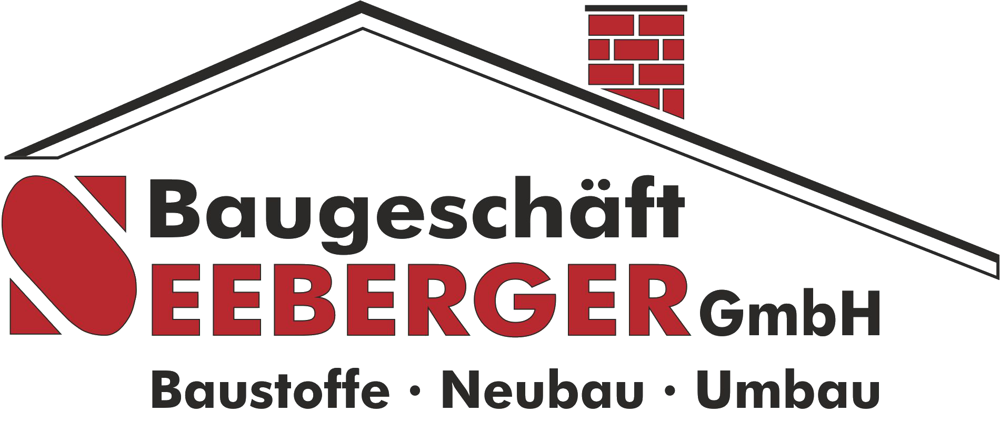
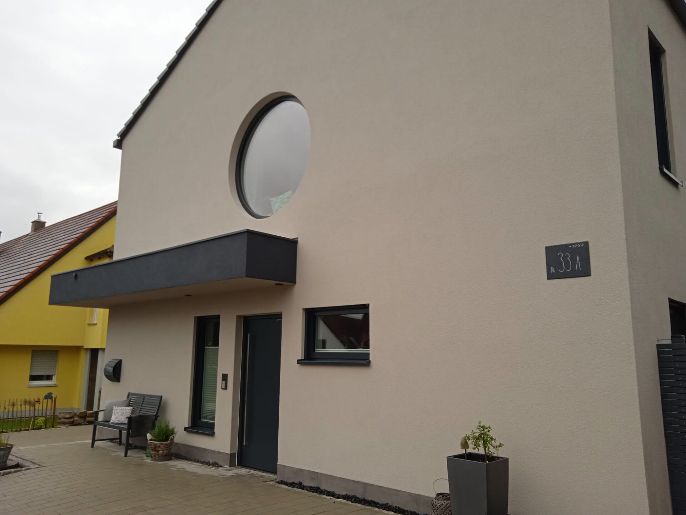
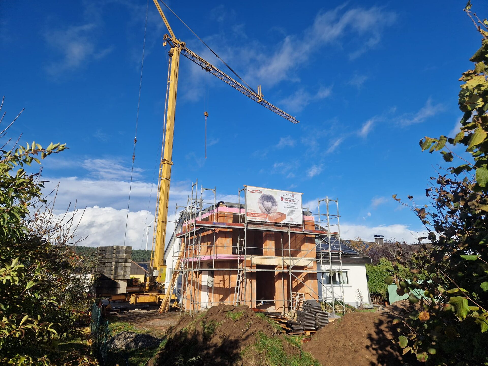
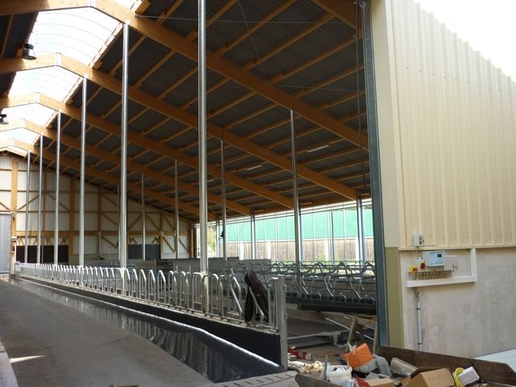
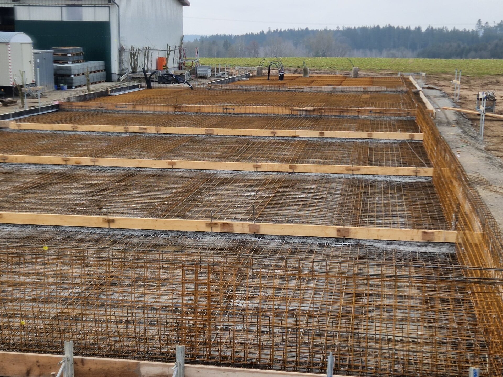
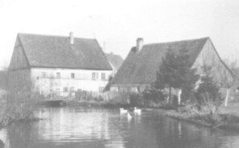

Einfamilienhaus, Mehrfamilienhaus, Doppel- oder Reihenhaus: Wir schaffen die massive Grundlage für ein dauerhaftes Zuhause.
- Kompletter Rohbau
- Anbauten & Erweiterungen
- Private und gewerbliche Bauherren

Baugeschäft Seeberger GmbH
Seit 1932 entstehen bei uns Häuser, Hallen, Umbauten und Lösungen, die in der Region bleiben.
Individuell geplant. Massiv gebaut.
Wir beraten direkt, arbeiten mit eigenem Equipment und übernehmen Verantwortung für das, was auf der Baustelle entsteht. Ohne Umwege, ohne anonyme Strukturen.
Den Betrieb kennenlernen →Leistungsakte / 01—04
Vom ersten Aushub bis zur fertigen Fläche. Vier Bereiche, ein Ansprechpartner und ein Team, das sein Handwerk kennt.




Einfamilienhaus, Mehrfamilienhaus, Doppel- oder Reihenhaus: Wir schaffen die massive Grundlage für ein dauerhaftes Zuhause.
Bestehendes weiterbauen: von der gezielten Öffnung bis zum anspruchsvollen Anbau an historische oder moderne Gebäude.
Robuste Bauwerke für echte Nutzung: Hallen, Ställe, Fahrsilos und besondere Industrieprojekte mit klaren Abläufen.
Präzise Bodenplatten für Holz- und Massivhäuser sowie Außenflächen, die Material, Nutzung und Grundstück verbinden.
Bauakte / Ausgewählte Arbeiten
Am Betrieb in der Rothachstraße halten wir Baustoffe – auch in Kleinmengen – bereit. Kran, Stapler, Kleintransporter und LKW gehören zum eigenen Fuhrpark.

Familienbetrieb / Vier Generationen
Von Generation zu Generation wird nicht nur ein Betrieb weitergegeben, sondern eine Haltung: bodenständig bleiben, sauber arbeiten und offen für neue Lösungen sein.
GründungXaver und Maria Seeberger gründen das Baugeschäft.
Zweite GenerationBernhard Seeberger sen. übernimmt den Familienbetrieb.
Dritte GenerationMaurermeister Bernhard Seeberger jun. führt das Unternehmen weiter.
Vierte GenerationAlex Seeberger kehrt als Meister und Techniker in den Betrieb zurück.
„Saubere Arbeit, Pünktlichkeit und Genauigkeit – auch beim Umbau unseres Altstadthauses waren wir sehr zufrieden.“
Nächster Schritt
Erzählen Sie uns kurz von Ihrem Vorhaben. Wir melden uns persönlich und besprechen, was sinnvoll ist.
Rothachstraße 8